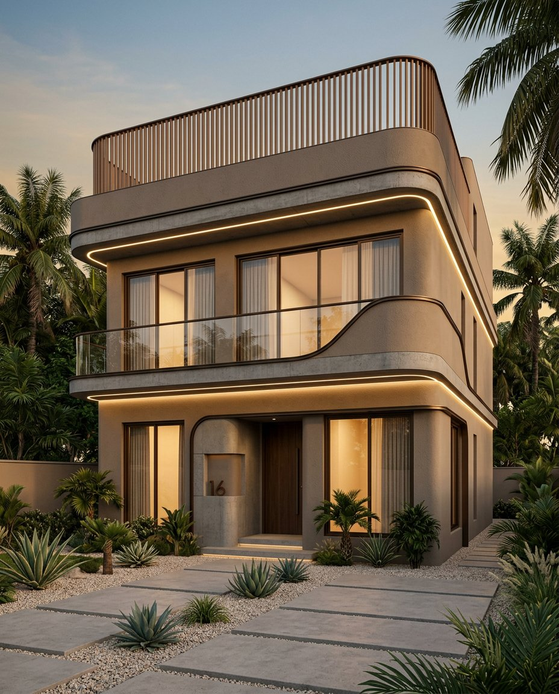

Mineral Taupe
#B6A38ERGB 182 · 163 · 142
Approx. RAL 1019*
TROPICAL CONTEMPORARY · INDIA
A professional concept-to-construction framework translating the reference façade into coordinated systems, material specifications and site-ready design intent.

PROJECT BASIS
The image has no verified scale, site data or plans. Dimensions below are coordination ranges, not construction dimensions. A registered architect and licensed structural engineer must validate survey, soil report, setbacks, structure, services, fire safety and permits under the applicable local authority.
01 / SYSTEM ANATOMY
Read the façade as independent maintainable systems fixed back to a primary RCC frame—not as ornamental plaster alone.
Drag your eye from structure → weather layer → feature skin. Separation prevents cracking, staining and difficult replacement.
02 / MATERIAL & COLOUR
Sample under actual daylight before approval. Digital colours are design targets only; use physical mock-ups for finish acceptance.
#B6A38ERGB 182 · 163 · 142
Approx. RAL 1019*
#D2C2ADRGB 210 · 194 · 173
Approx. RAL 1015*
#413932RGB 65 · 57 · 50
Approx. RAL 8019*
#79513BRGB 121 · 81 · 59
Approx. RAL 8025*
#D5A34ELow-glare LED
CRI ≥ 90 · IP67
*RAL references are approximate visual equivalents, not conversions. Approve against supplier samples and a 2 m × 2 m external mock-up.
03 / CRITICAL DETAILS
04 / GEOMETRY CONTROL
Use a common setting-out grid so curved ribbons, openings, slab edges and lighting resolve as one composition.
Coordinate façade bands, reveals and screen spacing to a project-wide module.
Use only three approved radii: indicative R150, R300 and R600 mm. CNC-cut templates control plaster and metalwork.
Continue substrate and finish control joints at structural transitions; never bridge RCC–masonry interfaces rigidly.
Minimum 1:80 finished falls on exposed ledges; drips 20 mm from face; no flat upward-facing trim surfaces.
05 / DELIVERY SEQUENCE
Do not release ornamental packages before architecture, structure and waterproofing interfaces are frozen.
Topo survey, geotechnical report, climate, authority setbacks, parking and utility constraints.
Architectural plans, RCC grid, openings, rainwater, AC, electrical and façade access in federated 3D/BIM.
Structural calculations, wind/seismic loads, balustrade, cantilevers, screen subframe and anchors.
Full-scale corner mock-up: curved profile, texture, window jamb, LED recess, drip and sealants.
Complete substrate, waterproofing and flood/spray tests before finish layers and lighting.
Torque and pull-out records, glass certificates, earthing, lux test, drainage test and as-built manual.
06 / INDIA COMPLIANCE MAP
Confirm state/local adoption and latest amendments with the approving authority. For Kerala, verify current KMBR/KPBR requirements.
Parts 3 Development Control; 4 Fire & Life Safety; 6 Structural Design; 8 Building Services; 9 Plumbing; 11 Sustainability.
Plain/reinforced concrete and dead, imposed and wind actions. Engineer all cantilevers and parapets.
Seismic criteria and ductile detailing where applicable. Coordinate non-structural façade restraint.
General construction in steel and structural steel material. Specify corrosion protection by exposure.
Safety glazing. Final glass build-up, edge cover and fixing require specialist design and calculations.
Electrical installations, protection, earthing, isolation and maintainable external lighting circuits.
07 / PERFORMANCE SCHEDULE
| Element | Design intent | Minimum coordination requirement | Verification |
|---|---|---|---|
| External wall | Warm textured mineral finish | Compatible complete render system; reinforced interfaces; low-VOC exterior coating | Mock-up, adhesion, colour |
| Curved ribbon | Dark, crisp continuous line | Prefabricated aluminium/GFRC profile; drained and independently fixed | Template + 3 m straightedge |
| Balcony | Frameless transparent guard | Engineered laminated safety glass; concealed drainage; no field glass cutting | Calculations + certificates |
| Roof screen | Timber-toned vertical fins | Powder-coated aluminium; replaceable modules; isolated dissimilar metals | Coating DFT + anchor tests |
| Linear light | Continuous warm reveal | 2700 K, CRI ≥90, IP67 luminaire in accessible aluminium channel | Night mock-up + insulation |
| Horizontal ledges | Monolithic shadow bands | Falls away from wall, formed drips, waterproof upstands and movement joints | Flood / hose test |